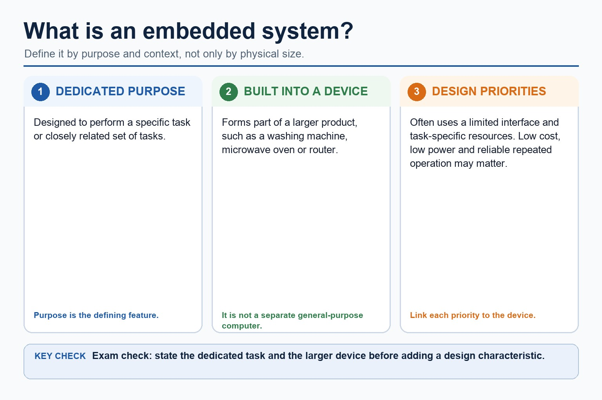

An embedded system is a computer system built into a larger device to perform one dedicated task or a closely related set of tasks. A microcontroller may integrate the processor, memory and input/output interfaces needed for that task.
Benefits can include low cost, low power use, small size and reliable, predictable automatic operation because the hardware and software are designed for a limited purpose. Drawbacks can include limited processing, storage and user interface, difficulty adding new functions, and dependence on the embedded controller: if it fails, the larger device may stop working. A valid comparison must link each point to the device and task.
An embedded system can have a benefit such as efficient dedicated operation and a drawback such as limited flexibility; both must be applied to the device.
Worked example: Washing-machine controller
A dedicated microcontroller can read sensors and control the motor and valves with low power use and predictable timing. Its limited interface is acceptable for wash programs, but it cannot readily run unrelated applications, and a controller failure can prevent the whole machine from operating.
Core syllabus practice
Embedded systems: purpose, benefits and drawbacks: apply and assess
Targeted practice
1. What two features define an embedded system?
Show answer
It is built into a larger device and performs a dedicated task or closely related set of tasks.
2. Give one benefit of an embedded controller and explain its consequence.
Show answer
For example, low power use reduces energy or battery demand for the device.
3. Give one drawback of an embedded controller and explain its consequence.
Show answer
For example, limited resources make it difficult to add unrelated functions or run general-purpose software.
4. Why can failure of an embedded controller be serious?
Show answer
The larger device may lose the function controlled by that computer or stop operating.
Exam-style question
5 marks
A battery-powered medical monitor uses an embedded controller. Explain two benefits and two drawbacks of this design in context.
Show MS
Answer
Guidance
Marks
benefit such as low power, compact size or predictable automatic operation
Do not award bare adjectives such as 'small' or 'cheap' without a device-specific consequence.
1
first benefit linked to battery life, portability or continuous monitoring
1
drawback such as limited resources/upgrading/interface or controller dependence
1
first drawback linked to limited new functions or device failure
1
second distinct benefit or drawback correctly developed
1
Lesson 033 | 45 minutes | Paper 1 Section 3
An embedded system is a computer that quietly does one job very seriously.
This lesson explains why embedded systems are built for dedicated tasks and
how a microcontroller can integrate processing, memory and input/output on one
chip. Control-system components and feedback are introduced in Lesson 034.
Defineembedded systems and microcontrollers accurately
Comparemicrocontrollers with general-purpose computers
Explainwhy embedded systems are designed for specific tasks
A washing machine contains an embedded computer designed around the appliance rather than around many unrelated user programs.
Why this matters
Embedded-system answers need more than “a small computer”: identify its dedicated purpose and its place inside a larger device.
Common error
A microcontroller is not just "a tiny CPU". It often integrates CPU, memory and input/output interfaces on one chip.
Warm-up hook
Why does a washing machine use an embedded computer instead of a general-purpose laptop?
Click one design reason, then connect it to the appliance's dedicated purpose.
Knowledge point 1
What is an embedded system?
Dedicated purposeDesigned to perform a specific task or set of tasks.Built into devicePart of a larger product, such as a washing machine or traffic light.Limited interfaceOften has few controls or displays compared with a general-purpose computer.Limited resourcesHardware is selected for the required task rather than maximum general performance.Reliability focusUsually expected to run repeatedly and predictably.
Chinese support: embedded system = 嵌入式系统；microcontroller = 微控制器；dedicated purpose = 专用功能；general-purpose computer = 通用计算机。
What is an embedded system?

What is an embedded system?: source-grounded visual explanation.
Lesson fact: An embedded system is designed to perform a specific task or closely related set of tasks.
Lesson fact: It forms part of a larger product, such as a washing machine, microwave oven or router.
Lesson fact: It often uses a limited interface and task-specific resources.
Lesson fact: Low cost, low power and reliable repeated operation may be relevant design priorities.
Lesson fact: Define an embedded system by purpose and context, not only by physical size.
Knowledge point 3
Microcontroller vs general-purpose computer
Feature
Microcontroller / embedded system
General-purpose computer
Purpose
Designed for a specific control task.
Designed to run many different programs.
Hardware
Often integrates CPU, memory and I/O on one chip.
Separate high-performance components are common.
Interface
May have simple buttons, LEDs or no screen.
Usually has richer input/output and user interface.
Size alone is not the definition. An embedded system is built into a larger device and performs a specific task or set of tasks.
"An embedded system is just a normal computer inside a machine."
An embedded system is built into a larger device and designed for a specific task, often with limited interface, low power use and predictable control behaviour.
Exam-style questions
Questions with expandable MS
Attempt first, then expand the mark scheme. Credit depends on purpose, integration, interface and design priorities.
Summary
Embedded systems in six exam points
Embedded systemComputer system built into a larger device for a specific task.
MicrocontrollerOften integrates CPU, memory and I/O for control tasks.
IntegrationCPU, memory and input/output interfaces may share one chip.
InterfaceUsually limited to the controls and displays needed for the task.
ResourcesSelected for cost, power and required performance.
ReliabilityDesigned for predictable repeated operation.
Homework
Clear tasks
Explain why a microwave oven is an embedded system using purpose, integration and interface.
Write a 5-mark comparison between a microcontroller and a general-purpose computer.
Compare an embedded system with a general-purpose computer using purpose, interface and hardware.
Rewrite this weak sentence: "An embedded system is just a small computer."
Microwave: it is built into the appliance, performs a dedicated set of cooking and timing tasks, and needs only a limited interface.
Microcontroller: it can integrate CPU, memory and input/output interfaces on one chip, supporting low cost and low power use.
Comparison: embedded system has a dedicated purpose and limited interface; general-purpose computer runs many programs.
Correction: an embedded system is defined by its dedicated role inside a larger device, not merely by physical size.